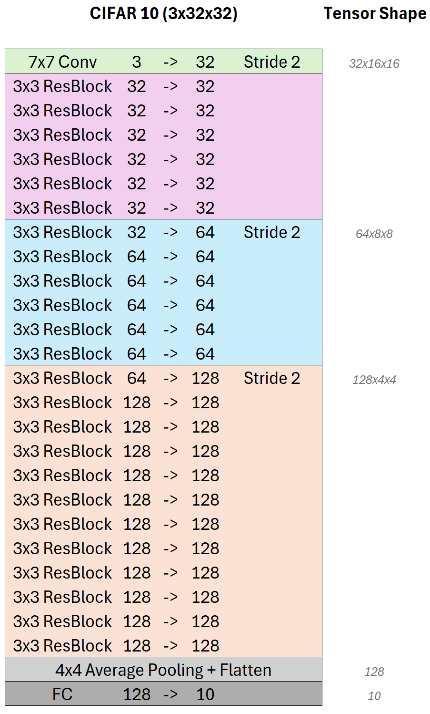

ResNet
In diesem Abschnitt finden Sie die Aufgaben und Beispiele zur Implementierung von ResNet-Architekturen in PyTorch. Die ResNet-Architektur ist bekannt für ihre Fähigkeit, tiefe neuronale Netzwerke zu trainieren, indem sie Residualverbindungen verwendet, die den Gradientenfluss verbessern und das Problem der verschwindenden Gradienten verringern.
ResNet wurde Ursprünglich von Kaiming He et al. in ihrem Paper „Deep Residual Learning for Image Recognition“ vorgestellt. Es hat sich als äußerst effektiv erwiesen und wurde in vielen Anwendungen der Computer Vision eingesetzt.
Aufgabe 1: ResNet-Block implementieren
Wir implementieren zunächst den grundlegenden ResNet-Block, der die Residualverbindung enthält. Aus diesem Block werden dann die tieferen ResNet-Architekturen aufgebaut.

Der ResNet-Block besteht aus zwei aufeinanderfolgenden Convolutional-Layern, gefolgt von Batch Normalization und ReLU-Aktivierung. Die Residualverbindung addiert den Eingang des Blocks zu der Ausgabe der zweiten Convolutional-Schicht.
Unser Netzwerk wird zwei Varianten des ResNet-Blocks enthalten. Die linke Architektur zeigen den ResNet-Block ohne Downsampling (Stride). Die Anzahl der Kanäle bleibt gleich.
Die rechte Architektur zeigt den ResNet-Block mit Downsampling, bei dem gleichzeitig die Anzahl der Kanäle verdoppelt wird. Damit die Residualverbindung funktioniert, muss der Eingang des Blocks auf die gleiche Größe wie die Ausgabe transformiert werden. Dazu verwenden wir eine 1x1 Convolutional-Schicht, die die Anzahl der Kanäle anpasst und den selben Stride wie die Convolutional-Schicht verwendet.
Alle Faltungen sind mit einer Kernelgröße von 3x3 und Padding von 1 konfiguriert, um die räumliche Größe der Eingabe beizubehalten. Sie verwenden ausserdem keinen Bias.
Implementieren Sie die Klasse ResidualBlock in der Datei resnet/resnet.py, die den ResNet-Block mit und ohne Downsampling enthält.
- class resnet.ResidualBlock(in_channels, out_channels, stride=1)[Quellcode]
Bases:
Module- __init__(in_channels, out_channels, stride=1)[Quellcode]
Initialisiert einen Residual Block.
Parameters:
- in_channels (int):
Anzahl der Eingabekanäle.
- out_channels (int):
Anzahl der Ausgabekanäle.
- stride (int):
Schrittweite für die Faltung. Standard ist 1.
TODO:
Rufen Sie die __init__ Methode der Basisklasse nn.Module auf.
Initialisieren Sie dann die Schichten des Residual Blocks.
Verwenden Sie nn.Conv2d für die Faltungsschichten. Setzen Sie kernel_size=3, padding=1 und bias=False.
Die erste Faltungsschicht sollte in_channels zu out_channels transformieren, die zweite Faltungsschicht sollte out_channels zu out_channels transformieren.
Die ersten Faltungsschicht sollte stride als Schrittweite verwenden.
Fügen Sie nn.BatchNorm2d nach jeder Faltungsschicht hinzu. Achten Sie darauf, dass die Batch-Normalisierung die gleiche Anzahl an Ausgabekanälen wie die Faltungsschicht hat.
Verwenden Sie nn.ReLU als Aktivierungsfunktion.
Implementieren Sie die Shortcut-Verbindung. Wenn stride nicht 1 ist oder in_channels nicht gleich out_channels, verwenden Sie eine 1x1 Faltung, um die Dimensionen anzupassen. Andernfalls verwenden Sie nn.Identity().
- forward(x)[Quellcode]
Führt den Vorwärtsdurchlauf des Residual Blocks aus.
Parameters:
- x (torch.Tensor):
Eingabetensor.
TODO: Implementieren Sie den Vorwärtsdurchlauf des Residual Blocks. Orientieren Sie sich an der in der Aufgabenstellung gegebenen Beschreibung sowie der Grafik.
Musterlösung für den Konstruktur __init__ anzeigen
class ResidualBlock(nn.Module):
def __init__(self, in_channels, out_channels, stride=1):
super(ResidualBlock, self).__init__()
self.conv1 = nn.Sequential(
nn.Conv2d(in_channels, out_channels, kernel_size=3, padding=1, stride=stride, bias=False),
nn.BatchNorm2d(out_channels),
)
self.conv2 = nn.Sequential(
nn.Conv2d(out_channels, out_channels, kernel_size=3, padding=1, bias=False),
nn.BatchNorm2d(out_channels)
)
self.relu = nn.ReLU(inplace=True)
# Shortcut connection
if stride != 1 or in_channels != out_channels:
self.shortcut = nn.Conv2d(in_channels, out_channels, kernel_size=1, stride=stride, bias=False)
else:
self.shortcut = nn.Identity()
Musterlösung für den Forwärtspass anzeigen
def forward(self, x):
residual = self.shortcut(x)
out = self.relu(self.conv1(x))
out = self.relu(self.conv2(out) + residual)
return out
Aufgabe 2: Ein einfaches ResNet-Modell implementieren
Nachdem wir den ResNet-Block implementiert haben, können wir ein einfaches ResNet-Modell erstellen. Das Modell besteht aus mehreren ResNet-Blöcken, die in verschiedenen Konfigurationen angeordnet sind.
Die Architektur, die wir in diesem Abschnitt implementieren, ist eine an den CIFAR-10-Datensatz angepasste Version von ResNet. Wir verwenden insgesamt 25 Faltungsschichten, die in 4 Blöcken organisiert sind.
{kind=link}
Grundsätzlichen werden alle Convolutional-Schichten der Architektur von einer Batch Normalization-Schicht gefolgt, die die Normalisierung der Aktivierungen ermöglicht und die Trainingsstabilität verbessert. Als Nicht-Linearität verwenden wir die ReLU-Aktivierungsfunktion nach jeder Batch-Normalization-Schicht. Alle Convolutional-Schichten verwenden keinen Bias da dieser durch die Batch Normalization-Schicht ersetzt wird.
In der ersten Schicht (grün) verwenden wir die einzige 7x7 Convolutional-Schicht des Netzwerkes. Die 3 Eingangskanäle werden auf 32 Kanäle erweitert. Gleichzeit verringert ein Stride von 2 die räumliche Dimension der Eingabe um die Hälfte.
In der folgenden Schichten verwenden wir 6 aufeinanderfolgende ResNet-Blöcke (pink), die jeweils 32 Kanäle haben. Die Shortcut-Verbindung jedes ResNet-Blocks ermöglicht einen stabilen Gradientenfluss durch das Netzwerk. Die Anzahl der Kanäle bleibt in diesen Blöcken konstant, da sie keinen Downsampling-Schritt enthalten.
Die nächsten 6 ResNet-Blöcke (blau) verdoppeln die Anzahl der Kanäle auf 64 und verwenden einen Downsampling-Schritt mit einem Stride von 2. Das Downsampling sowie die Dimensionserhöhung erfolgt im ersten der sechs Blöcke. Die restlichen fünf Blöcke verwenden die gleiche Anzahl von Kanälen und behalten die räumliche Dimension bei.
Die letzte Stufe besteht aus insgesamt 12 ResNet-Blöcken (orange), wobei wieder die Anzahl der Kanäle im ersten Block auf 128 verdoppelt wird während eine Stride von 2 im ersten Block die räumliche Auflösung wieder halbiert.
Das Netzwerk endet mit einer globalen Durchschnittspooling-Schicht, die die räumliche Dimension auf 1x1 reduziert. Anschließend folgt eine voll verbundene Schicht, die die Anzahl der Kanäle auf 10 reduziert, um die 10 Klassen des CIFAR-10-Datensatzes zu klassifizieren.
Implementieren Sie nun zunächst die Methode Resnet._make_layer in der Datei resnet/resnet.py, die eine Sequenz von ResNet-Blöcken erstellt.
- ResNet.make_layer(in_channels, out_channels, num_blocks, stride)[Quellcode]
Erstellt eine Sequenz von Residual Blocks.
Parameters:
- in_channels (int):
Anzahl der Eingabekanäle.
- out_channels (int):
Anzahl der Ausgabekanäle.
- num_blocks (int):
Anzahl der Residual Blocks in dieser Schicht.
- stride (int):
Schrittweite für die erste Faltungsschicht des ersten Blocks.
Returns:
- nn.Sequential:
Eine Sequenz von Residual Blocks.
TODO:
Erstellen Sie eine Liste von Schichten, die die Residual Blocks enthalten.
Die erste Schicht sollte einen Residual Block mit in_channels, out_channels und stride sein.
Die folgenden Schichten sollten Residual Blocks mit gleichbleibender Kanalanzahl sein. Verwenden Sie out_channels sowohl für die Eingabe- als auch für die Ausgabekanäle.
Verwenden Sie nn.Sequential um die Schichten zu kombinieren und zurückzugeben.
Hinweis:
Die erste Schicht sollte die Schrittweite stride verwenden, während die anderen Schichten eine Schrittweite von 1 haben.
Sie können die gewünschten Layer mit nn.Sequential kombinieren.
Dazu können Sie die Blöcke zunächst in einer Liste (z.B. layers) sammeln und dann nn.Sequential(*layers) verwenden, um sie zu kombinieren.
Musterlösung anzeigen
def make_layer(self, block, out_channels, blocks, stride=1):
strides = [stride] + [1] * (num_blocks - 1)
layers = []
for s in strides:
layers.append(ResidualBlock(in_channels, out_channels, s))
in_channels = out_channels
return nn.Sequential(*layers)